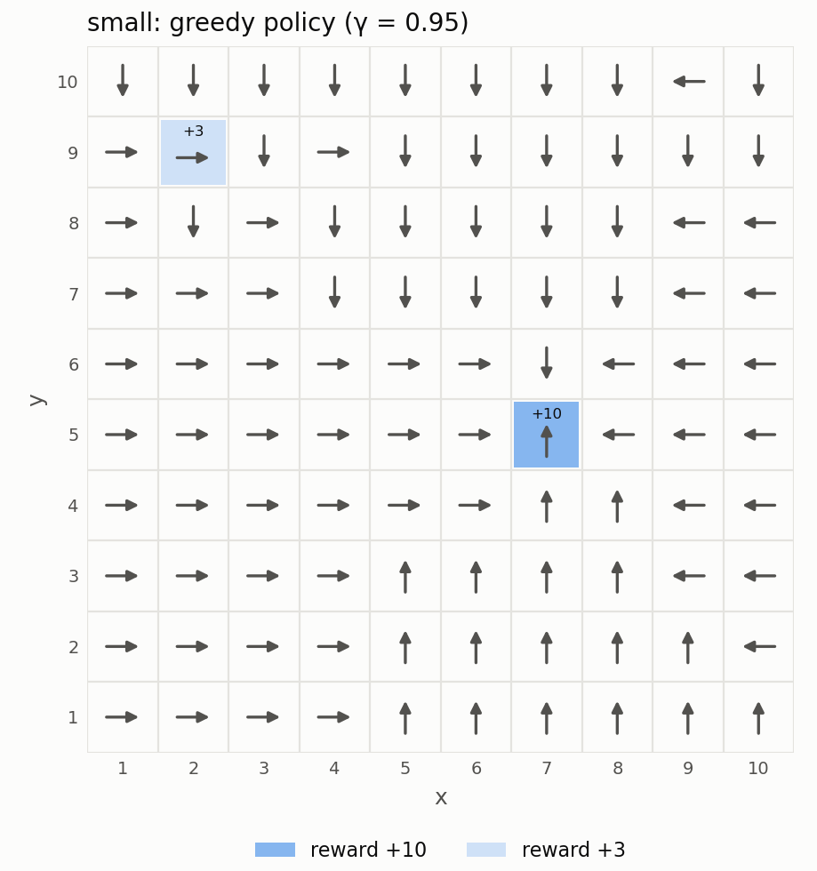
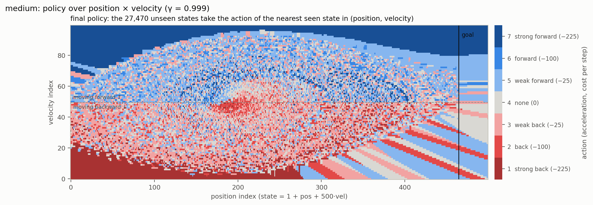
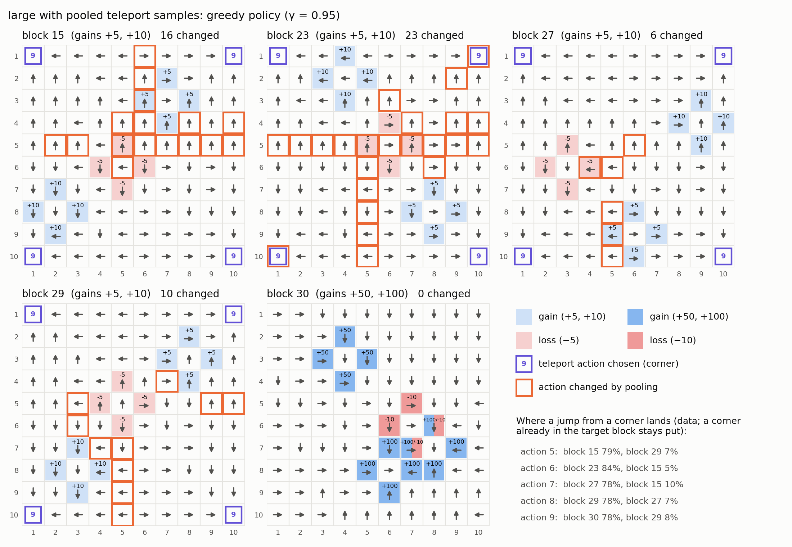

MS Mechanical Engineering student at Stanford University · Double degree with Arts et Métiers Institute of Technology
Decision making under uncertainty: reinforcement learning (ongoing)
Stanford University – AA228/CS238 Decision Making under Uncertainty · Sept–Dec 2026
This course teaches how an agent can choose good actions when the outcome of its actions is uncertain, using Markov decision processes (MDPs) and reinforcement learning. Below are two projects: learning policies from batch data, and our final project on buying shares without moving the market.
Learning policies from data (batch reinforcement learning)
For this project, we only receive a file of past experience: thousands of (state, action, reward, next state) samples, and we cannot interact with the environment. From these samples, I had to write a policy, that is an action for every state, for three problems of increasing size: small (100 states), medium (50,000 states) and large (302,020 states). The policies are then scored on a leaderboard.
Method: maximum likelihood model and value iteration
I used a model-based approach in Python. First I estimate the transition probabilities T(s'|s, a) and the rewards R(s, a) by counting what happened in the data. Then I solve this estimated MDP with value iteration, until the Bellman residual is below 10-6, and the policy takes the best action in each state. On small, the data covers all 400 state-action pairs about 125 times each, so this simple method is enough.

Policy found on the small problem (10 × 10 grid)
Medium: filling the states that were never seen
The medium problem is a car that must reach a goal by controlling its acceleration, with the state encoding a position and a velocity. The problem is undiscounted, but I used γ = 0.999: it makes value iteration converge while the reward of the goal still propagates to the far states. The goal states only appear as next states in the data, so I treat them as terminal.
Only 22,530 of the 50,000 states appear in the data, but the policy is evaluated everywhere, so each unseen state needs an action. I decode every state into a position (s mod 500) and a velocity (⌊s / 500⌋), and give each unseen state the action of the nearest seen state, using the distance (Δpos)² + 20 (Δvel)², which gives the velocity more weight. The assumption is that the best action changes only gradually: two states with almost the same position and velocity should take the same action.

Final policy over position and velocity (red: brake / go back, blue: accelerate)
Close to the data, the fill extends the policy smoothly. Far from it, it creates stripes with no physical meaning, but these states are probably never reached by the car. The fill still improved the leaderboard score.
Large: finding the hidden structure
Only 500 of the 302,020 states appear in the data. By analysing them, I found that they form five 10 × 10 grids. Actions 1–4 move to a neighbouring cell, and actions 5–9 teleport from a corner to another grid with about 80% success. One grid (block 30) gives rewards ten times bigger than the others, so every corner should teleport there with action 9. With plain maximum likelihood, some corners did not, because each corner only had a few samples per teleport action.
To fix this, I pooled the teleport samples of all 20 corners and used them as a Dirichlet prior: T̂(s'|s, a) = (N(s, a, s') + α Pa(s')) / (N(s, a) + α). A larger α trusts the pooled data more than the corner's own samples. With α = 100 (the policy is the same for every α ≥ 10), every corner outside block 30 now chooses the teleport to the best grid. The 301,520 unseen states keep a default action: the seen states never lead to them, so they do not change the result as long as the evaluation starts from the seen states.

Policy on the five grids; orange squares are the actions changed by pooling
Problem
States seen / total
γ
Iterations
Run time
Small
100 / 100
0.95
303
0.2 s
Medium
22,530 / 50,000
0.999
282
24.3 s
Large
500 / 302,020
0.95
358
6.1 s
Run times are the median of 3 runs (Python 3, single thread). Value iteration stops when the Bellman residual drops below 10-6, which is reached on all three problems. It only loops over the states seen in the data, which is why large, despite its 302,020 states, runs faster than medium (23.2 s of the 24.3 s on medium are spent in value iteration, plus 0.9 s for the nearest-neighbour fill).
Final project: buying without moving the market (ongoing)
With William Belluot
A large investor, such as a pension fund, often needs to buy many more shares than what sellers offer at any given time. Buying everything at once consumes the cheapest offers of the order book and then more and more expensive ones, which pushes the price up: this is called market impact. Our goal is to learn a policy that buys a fixed number of shares before a deadline at the lowest possible cost, and to beat the strategies used in practice: buying everything immediately, buying equal amounts at every step, and the classical schedule of Almgren and Chriss (2000).
The MDP
States: shares left to buy, time left, spread between the best ask and best bid, imbalance between buy and sell offers, and the price increase caused by our own recent purchases.
Actions: how much to buy (nothing, a fraction or everything left) and with which order type: a market order (immediate but expensive) or a limit order (cheaper but may never be filled).
Transitions: the price moves randomly and rises when we buy, part of this rise fades over time, and a limit order is filled with some probability.
Rewards: starting price minus price paid, with a strong penalty for the shares left at the deadline.
Plan
We are working in three phases: (1) build a Python market simulator (random walk of the price, spread, traded volume and order book depth) and solve the MDP exactly with value iteration; (2) hide the model and train Q-learning and SARSA, comparing them to the exact solution; (3) calibrate the simulator on real order book data and evaluate all the policies on the average cost, its variability and the rate of completion before the deadline. The simulator is built, and the results will be added here once the project is finished.